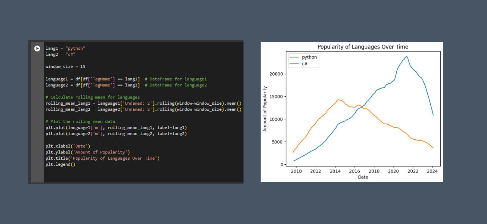

Python versus C#

This Google Colaboratory notebook analyzes the popularity of various programming languages over time using StackExchange data. It begins by importing the data, either from a CSV file or directly via an SQL query from StackExchange. The data includes monthly counts of posts tagged with languages like Java, Python, C#, and more. The notebook explores the data by displaying sample rows, checking dimensions, counting entries, and summarizing post counts by language.
Next, it transforms the date column for easier manipulation and groups the data by programming language to calculate total post counts. The notebook then visualizes the popularity trends of specific languages over time, using line plots to show the number of posts per month. It also includes rolling mean calculations to smooth out short-term fluctuations, providing clearer trend visualization. Matplotlib is used for plotting, with labeled axes and legends for readability. The result is a comprehensive view of how the popularity of different programming languages has evolved on StackExchange.